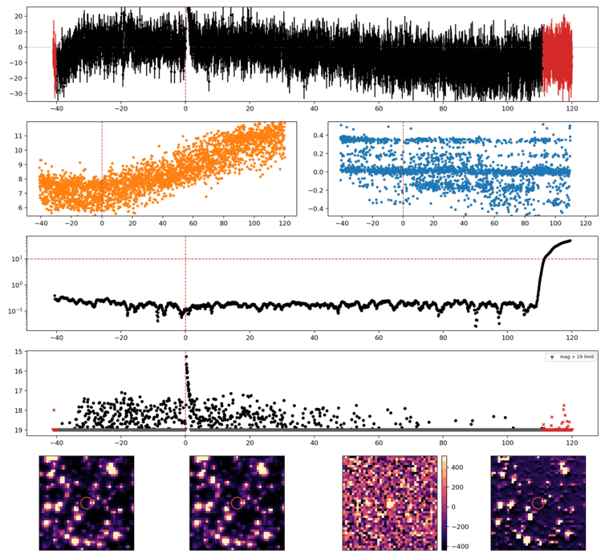
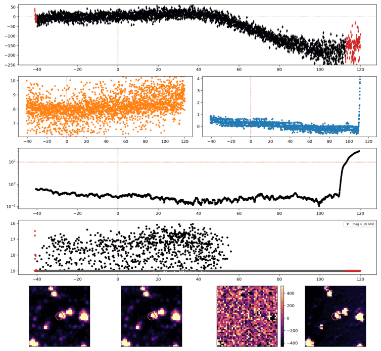
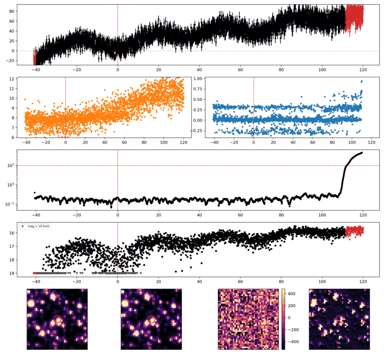
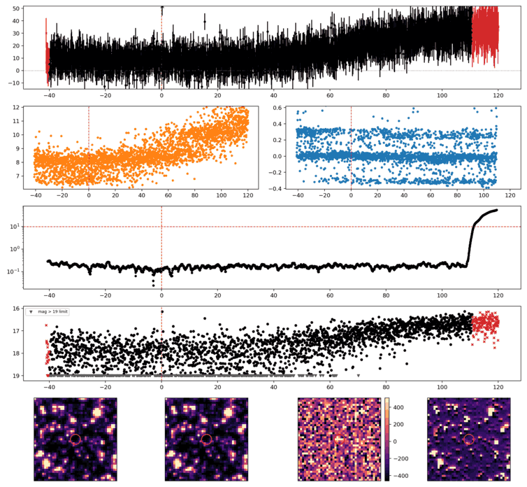
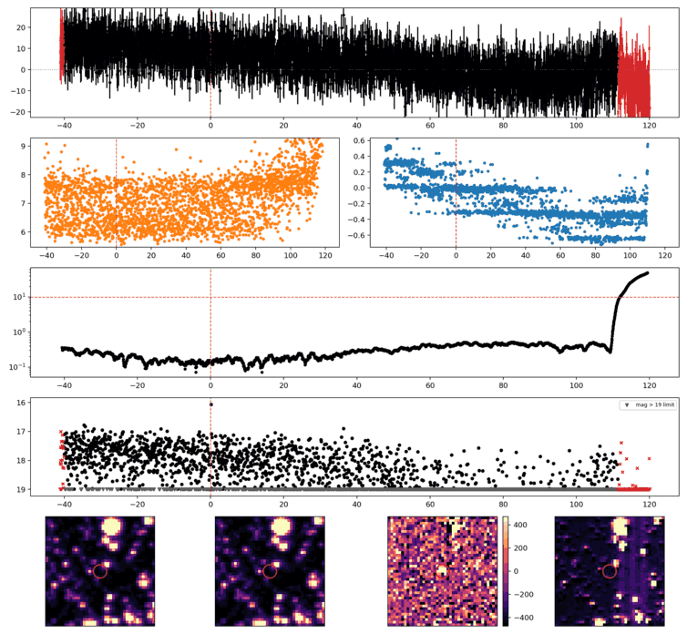
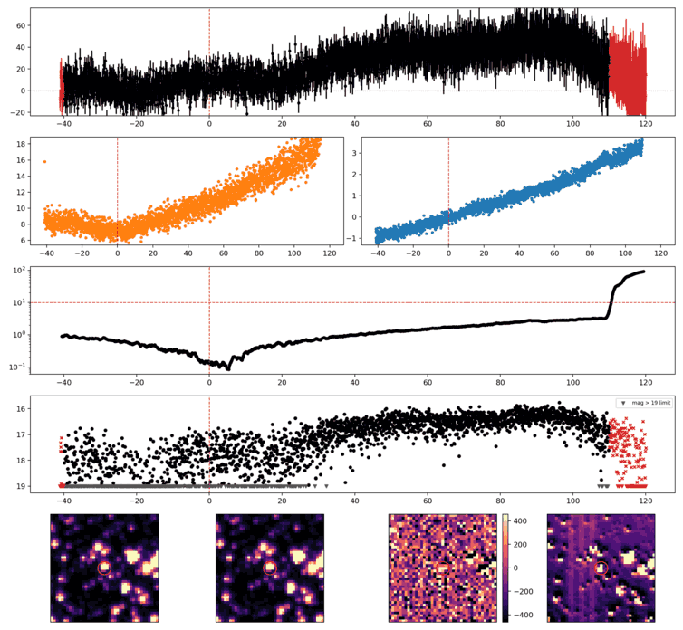
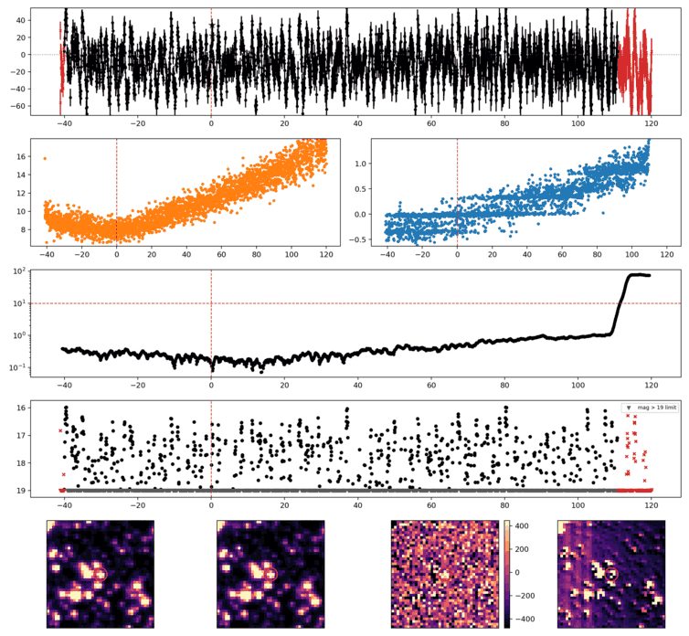
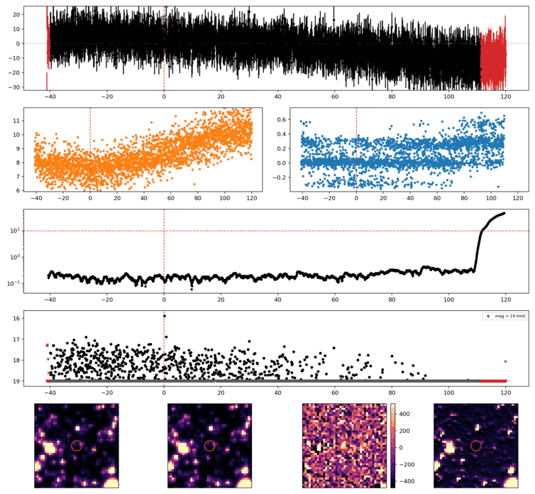

Search centered on refined position (96.2414201, +2.6020411 deg). Gaia coordinates are at J2016.0; proper motions are shown, without epoch propagation. A positional match does not change the candidate flags.
| Source ID / catalog entry | Separation (arcsec) | RA (deg) | Dec (deg) | G (mag) | BP (mag) | RP (mag) | Parallax ± error (mas) | PM RA* ± error (mas/yr) | PM Dec ± error (mas/yr) | RUWE | Variability |
|---|---|---|---|---|---|---|---|---|---|---|---|
| 3124202882340659712 | 3.368 | 96.2406073 | 2.6015763 | 19.579 | 21.166 | 18.306 | 1.591 ± 0.551 | -4.905 ± 0.468 | -10.390 ± 0.461 | 1.083 | NOT_AVAILABLE |
Retrieved 2026-10-26T06:54:04.503722+00:00
Representative chosen by category, detection count, then Gaussian S/N. Original measurements and classifications are retained below.

Search centered on refined position (88.2797226, +0.7892905 deg). Gaia coordinates are at J2016.0; proper motions are shown, without epoch propagation. A positional match does not change the candidate flags.
No Gaia DR3 sources found within 5 arcseconds.
Retrieved 2026-10-26T06:54:05.285313+00:00

Search centered on refined position (101.8537553, -3.5212350 deg). Gaia coordinates are at J2016.0; proper motions are shown, without epoch propagation. A positional match does not change the candidate flags.
No Gaia DR3 sources found within 5 arcseconds.
Retrieved 2026-10-26T06:54:06.063700+00:00

Search centered on refined position (97.7447278, +2.2430249 deg). Gaia coordinates are at J2016.0; proper motions are shown, without epoch propagation. A positional match does not change the candidate flags.
No Gaia DR3 sources found within 5 arcseconds.
Retrieved 2026-10-26T06:54:06.849939+00:00

Search centered on refined position (92.0541956, +1.0148967 deg). Gaia coordinates are at J2016.0; proper motions are shown, without epoch propagation. A positional match does not change the candidate flags.
No Gaia DR3 sources found within 5 arcseconds.
Retrieved 2026-10-26T06:54:07.613994+00:00

Search centered on refined position (106.9611860, +13.4626245 deg). Gaia coordinates are at J2016.0; proper motions are shown, without epoch propagation. A positional match does not change the candidate flags.
No Gaia DR3 sources found within 5 arcseconds.
Retrieved 2026-10-26T06:54:08.375500+00:00

Search centered on refined position (108.9460091, -0.2805572 deg). Gaia coordinates are at J2016.0; proper motions are shown, without epoch propagation. A positional match does not change the candidate flags.
| Source ID / catalog entry | Separation (arcsec) | RA (deg) | Dec (deg) | G (mag) | BP (mag) | RP (mag) | Parallax ± error (mas) | PM RA* ± error (mas/yr) | PM Dec ± error (mas/yr) | RUWE | Variability |
|---|---|---|---|---|---|---|---|---|---|---|---|
| 3111022972037097856 | 2.141 | 108.9465976 | -0.2806440 | 17.084 | 17.908 | 16.157 | 1.131 ± 0.086 | -6.145 ± 0.098 | -12.720 ± 0.097 | 1.038 | NOT_AVAILABLE |
Retrieved 2026-10-26T06:54:09.130775+00:00

Search centered on refined position (98.8709880, -3.0615778 deg). Gaia coordinates are at J2016.0; proper motions are shown, without epoch propagation. A positional match does not change the candidate flags.
| Source ID / catalog entry | Separation (arcsec) | RA (deg) | Dec (deg) | G (mag) | BP (mag) | RP (mag) | Parallax ± error (mas) | PM RA* ± error (mas/yr) | PM Dec ± error (mas/yr) | RUWE | Variability |
|---|---|---|---|---|---|---|---|---|---|---|---|
| 3105133712881033344 | 2.186 | 98.8715916 | -3.0616526 | 16.599 | 17.302 | 15.767 | 0.222 ± 0.054 | -0.010 ± 0.062 | -0.360 ± 0.059 | 1.012 | NOT_AVAILABLE |
Retrieved 2026-10-26T06:54:09.882334+00:00